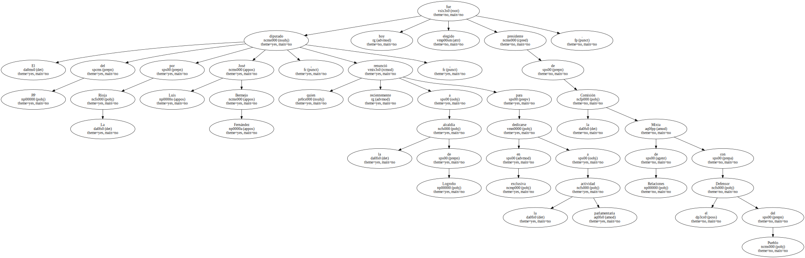
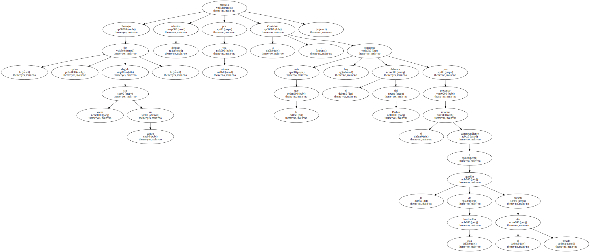
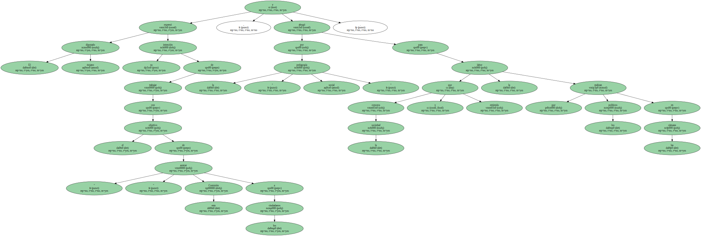
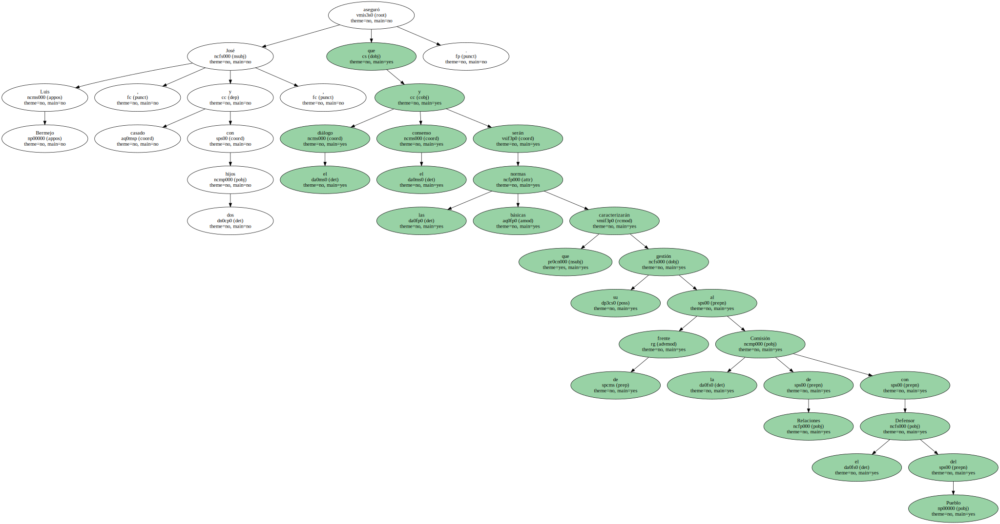
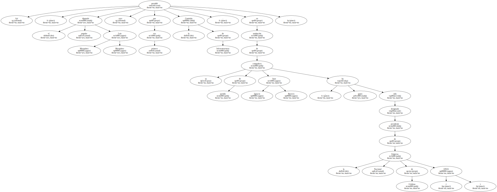
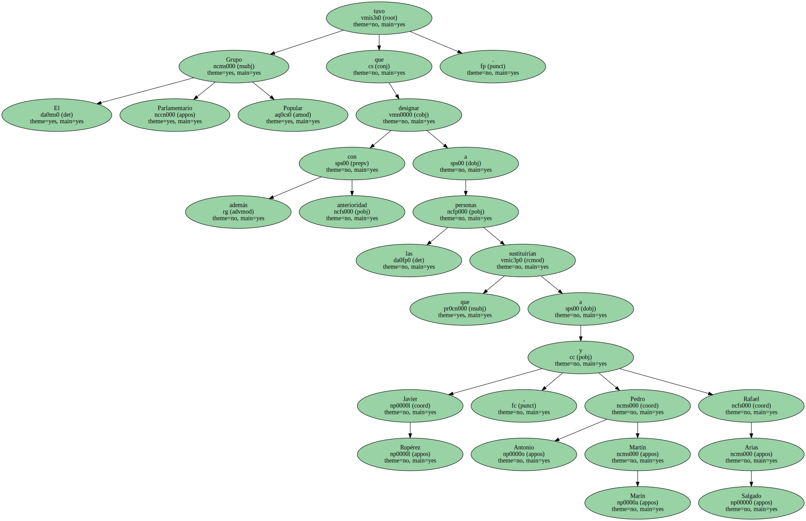
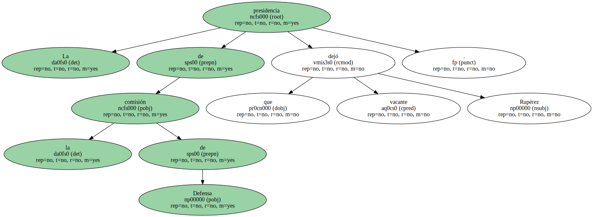

El diputado del PP por La Rioja José Luis Bermejo Fernández , quien renunció recientemente a la alcaldía de Logroño para dedicarse en exclusiva a la actividad parlamentaria , fue hoy elegido presidente de la Comisión Mixta de Relaciones con el Defensor del Pueblo.
Bermejo , quien fue elegido sin votos en contra , presidió minutos después por primera vez la Comisión , ante la que comparece hoy el defensor del Pueblo para presentar el informe correspondiente a la gestión de esta institución durante el pasado año.
El diputado riojano expresó su intención de trabajar con el objetivo de " acercar " esta Comisión a los ciudadanos , y abogó por la " pedagogía social " para que la sociedad conozca y entienda la labor que realizan los políticos en las cámaras.
José Luis Bermejo , casado y con dos hijos , aseguró que el diálogo y el consenso serán las normas básicas que caracterizarán su gestión al frente de la Comisión de Relaciones con el Defensor del Pueblo.
La elección de José Luis Bermejo completa una serie de cambios que se han sucedido durante las últimas semanas al frente de varias Comisiones del Congreso para sustituir a diputados que han sido designados para ocupar cargo en empresas públicas o que han optado por renunciar a la actividad política para dedicarse a la empresa privada.

Así , el diputado popular Luis Marquínez Marquínez presidió ayer por primera vez la Comisión de Infraestructuras , en sustitución de su compañero de partido Juan Ignacio Barrero , quien ha sido designado presidente de la Empresa Nacional de Celulosa ( ENCE ).
El Grupo Parlamentario Popular tuvo que designar además con anterioridad a las personas que sustituirían a Javier Rupérez , Pedro Antonio Martín Marín y Rafael Arias Salgado.
La presidencia de la comisión de Defensa que dejó vacante Rupérez.
